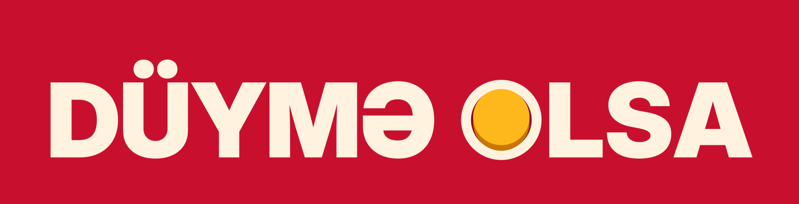
The O of OLSA is a real push-button, set into heavy caps as if it had always been a letter, so the name itself becomes the thing you wish you could press.
Four directions for a silent comedy page on Instagram and TikTok. Pick one to refine and animate.

The O of OLSA is a real push-button, set into heavy caps as if it had always been a letter, so the name itself becomes the thing you wish you could press.
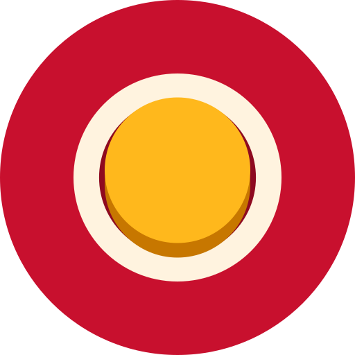
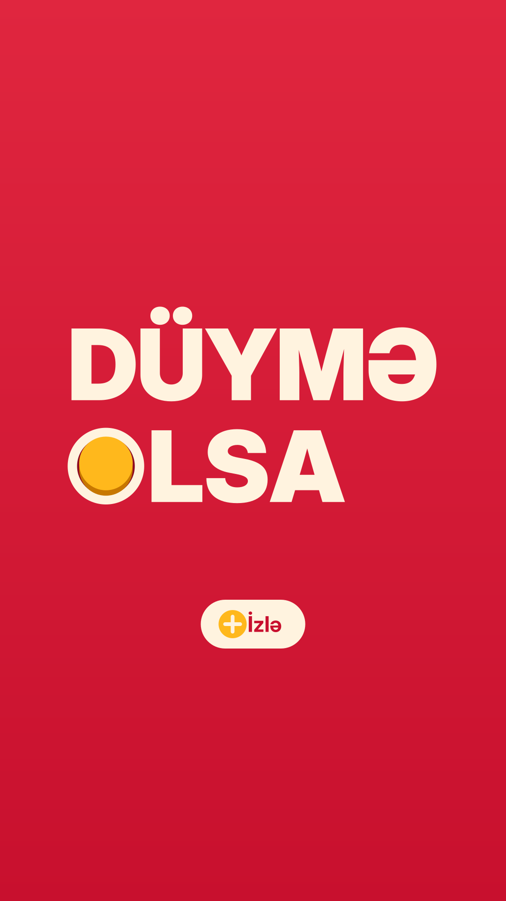
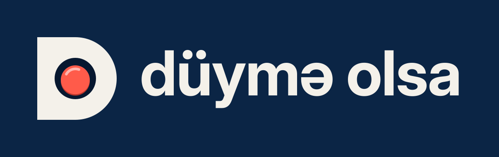
A geometric D whose round counter is a button caught mid-press. It's one compact, ownable symbol that stays readable as a 48 px avatar and pairs with a quiet lowercase name.
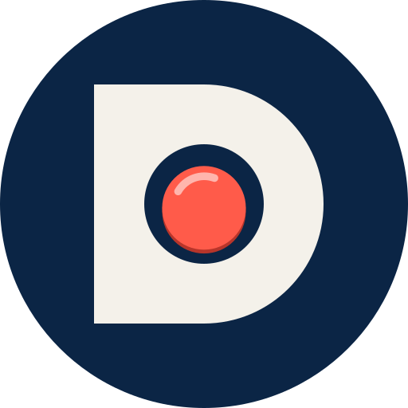
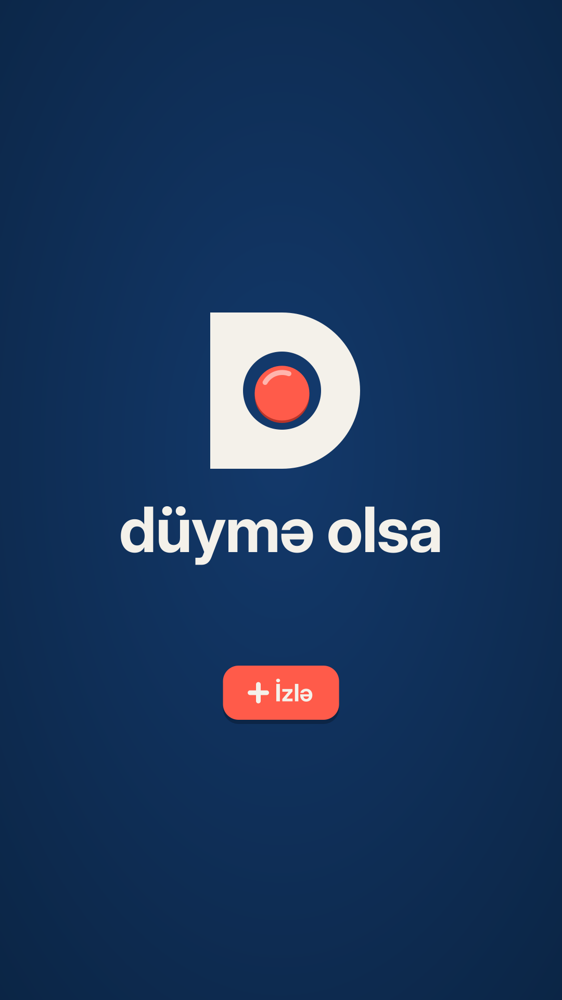
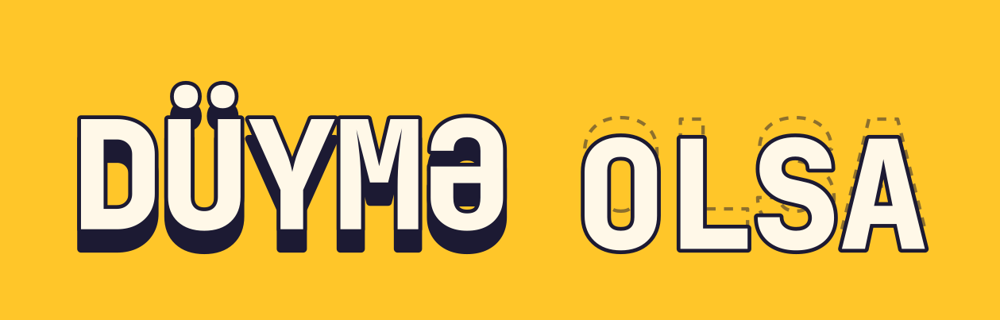
DÜYMƏ stands raised on its shadow while OLSA has already been pressed flat, leaving a dashed ghost of where it stood. The wordmark is the before and after of one tap, and the avatar shrinks that to two keys: D up, O down.
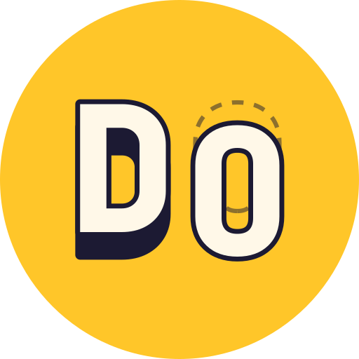
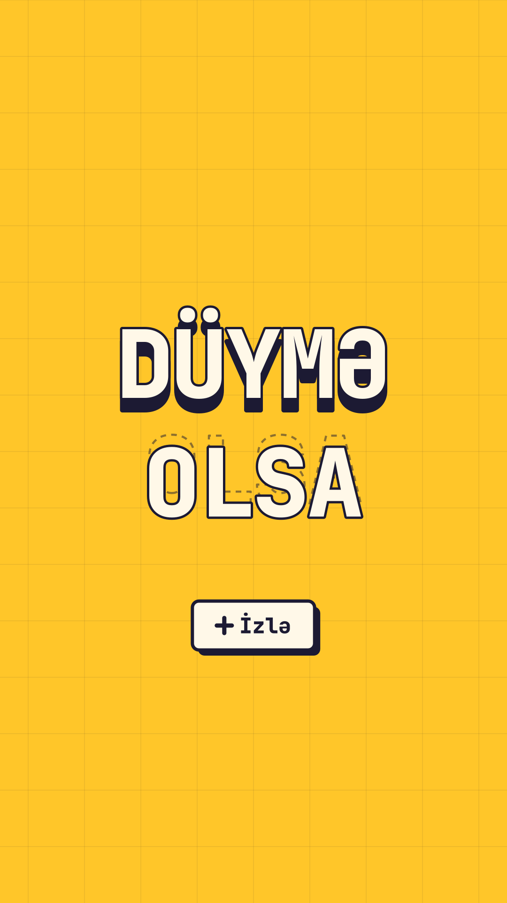
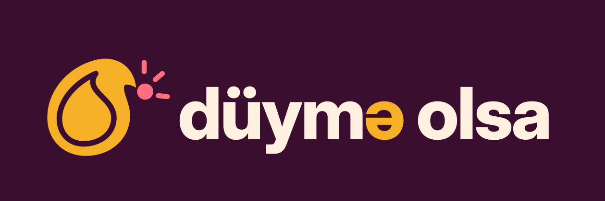
The buta from every aunt's kəlağayı bends its tip to press the button itself, so tradition reaches for the escape key. The page's joke and its Azerbaijani-ness come in one mark, with the ə picked out in saffron.
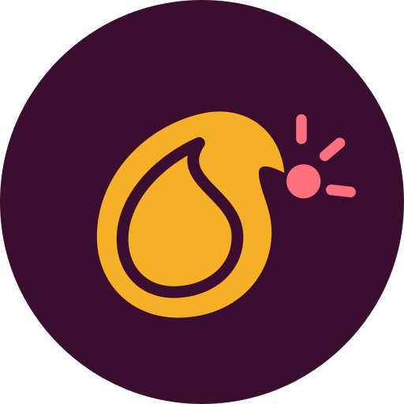
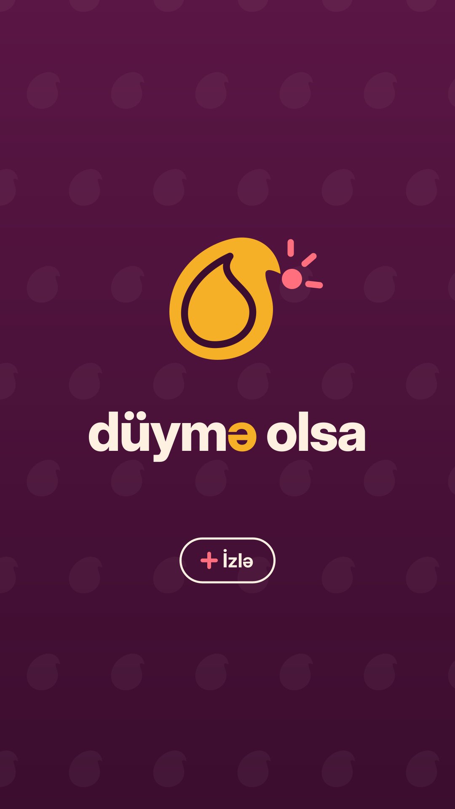